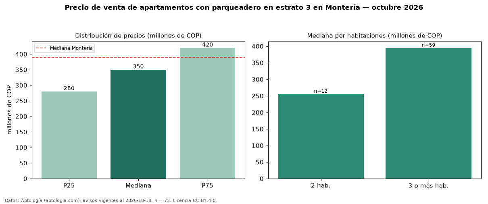

Precio de venta de apartamentos con parqueadero en estrato 3 en Montería — octubre 2026
Con 73 avisos vigentes, el precio mediano de apartamentos con parqueadero en estrato 3 en venta en Montería es COP 350 millones. Frente a la mediana de los apartamentos en estrato 3 en venta de Montería (COP 303 millones, n = 114), queda 16 % por encima; este segmento reúne el 64 % de esos avisos. Por metro cuadrado, la mediana es COP 3,56 millones/m² (n = 67), 3 % por debajo de los apartamentos en estrato 3 en venta de Montería (COP 3,66 millones/m²). El área mediana anunciada es 106 m². El segmento con más oferta es el de 3 o más habitaciones (59 avisos, mediana COP 395 millones); pasar de 2 habitaciones a 3 o más habitaciones cambia la mediana +54 %. La administración mediana declarada es COP 311.000 al mes (n = 32). La mediana de todos los apartamentos en venta de Montería es COP 390 millones (−10 % de diferencia). La mitad central de los avisos va de COP 280 millones a COP 420 millones (razón 1,5), una dispersión moderada. Datos: Aptología (aptologia.com), CC BY 4.0 — https://www.aptologia.com/venta/monteria. Archivos: PDF, CSV con las cifras y gráfica PNG.

| Avisos únicos | 73 |
|---|---|
| Percentil 25 | COP 280.000.000 |
| Mediana | COP 350.000.000 |
| Percentil 75 | COP 420.000.000 |
| Mediana por m² | COP 3.562.500 |
Fuente: avisos vigentes de portales inmobiliarios recopilados por Aptología, deduplicados (mínimo 30 avisos únicos por celda). Precios pedidos, no cerrados. Fecha: 2026-10-18.